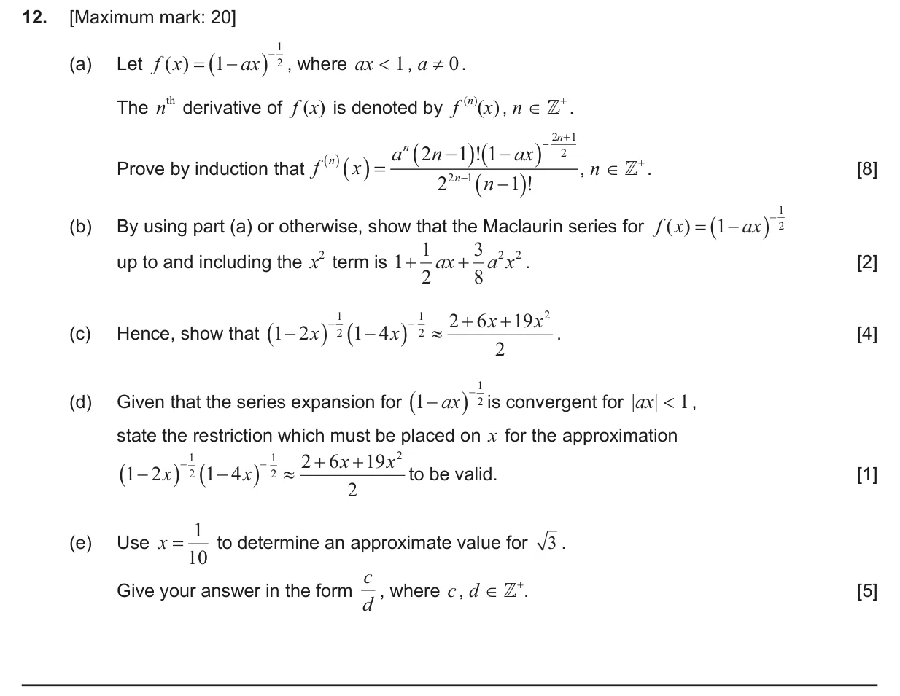
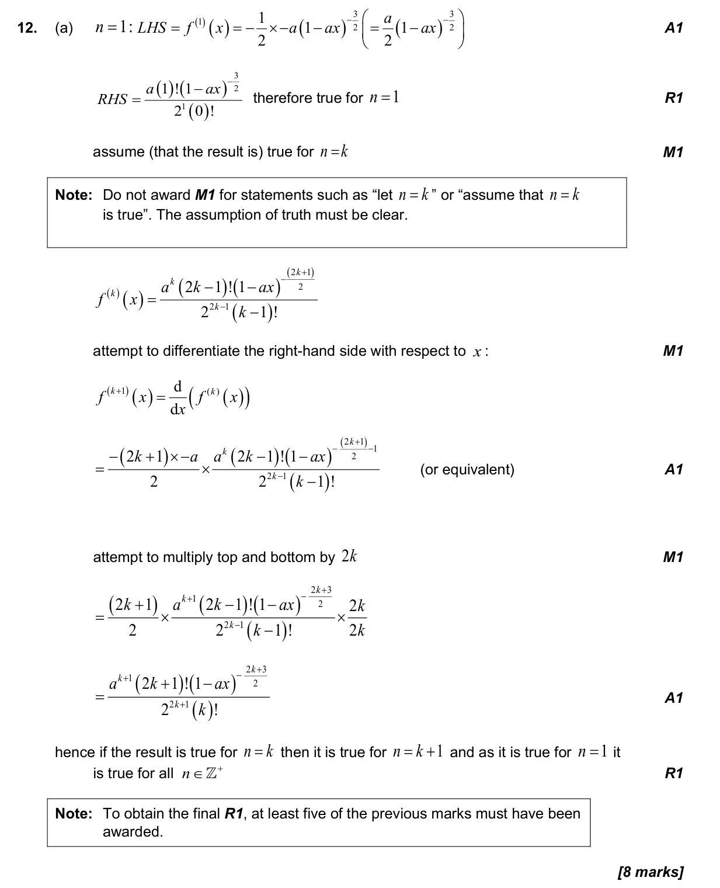
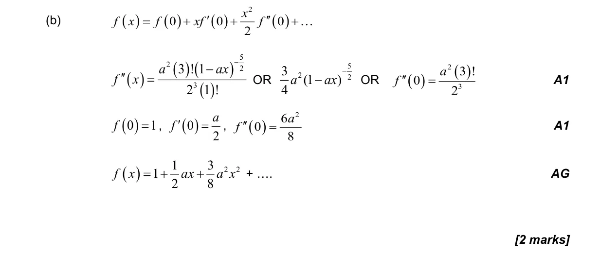
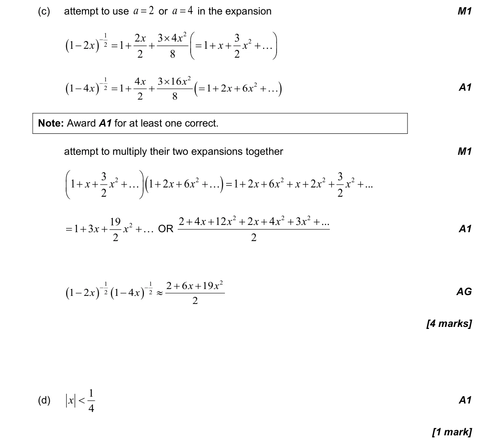
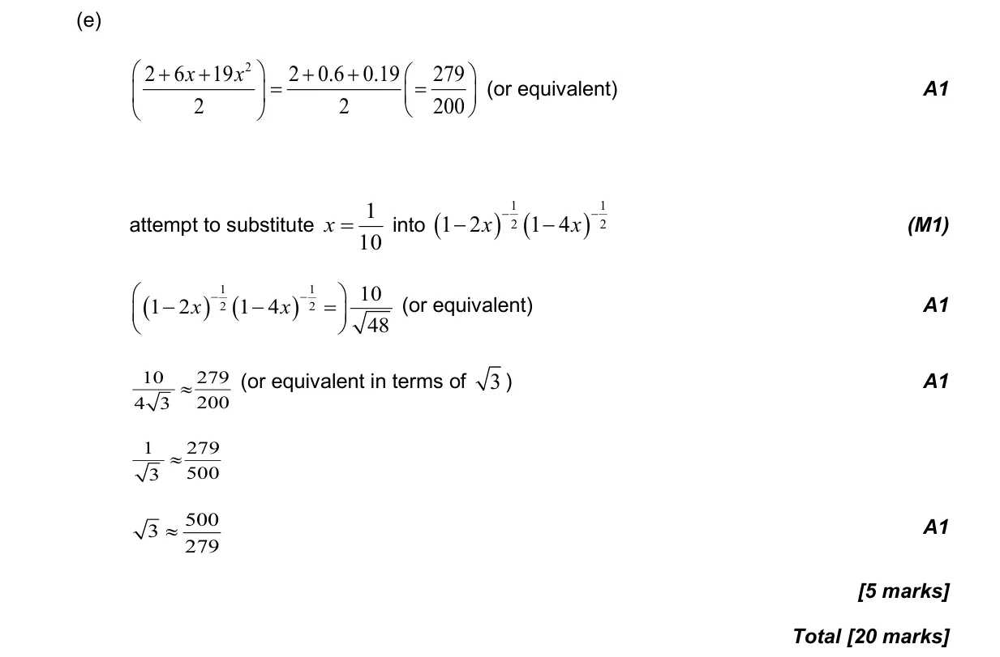

20 marks P1 TZ2 Section B No calculator 5.19 Maclaurin series1.15 Proof by induction, by contradiction and by counterexample5.12 Continuity, differentiability, limits and differentiation from first principles Question Hide breakdown abcde Markscheme 